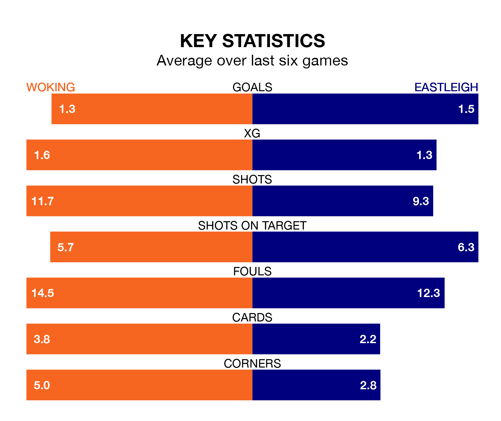

Eastleigh travel to the Laithwaite Community Stadium looking to secure a first win in six National League games against Woking on Friday.
The Spitfires have lost three and drawn two matches since they last earned three points – against Bromley on February 24.
They face a Woking side who have won three and drawn one over that time.
With 42 goals in 41 games so far this season, Woking are the league's second-lowest scorers with 1.0 goals per game. But they are conceding fewer than average too, letting in 49 goals at a rate of 1.2 per game.
Eastleigh, meanwhile, are above average scorers, with 1.7 goals per game, compared to a league average of 1.5. They have conceded 2.0 goals per game.
In the last 10 years, Woking and Eastleigh have played each other on 18 occasions. Woking won five of them, Eastleigh six, and they drew seven times.
On average, the Cardinals scored 1.1 goals and the Spitfires 1.3 in those matches.
Their last meeting was on October 24, when Woking won 1-0 away.
The Spitfires are 18th in the table after 40 games, of which they have won 12 and drawn 11, earning 47 points.
The Cardinals are three places ahead of the away side in 15th, with 13 wins and nine draws putting them on 48 points.
Woking's last match was on Saturday, a 0-0 draw against Southend United.
Eastleigh drew 1-1 with Hartlepool United last time out, also on Saturday, with Chris Maguire on the scoresheet.
Updated: 12:16 (UTC), 25/03/24